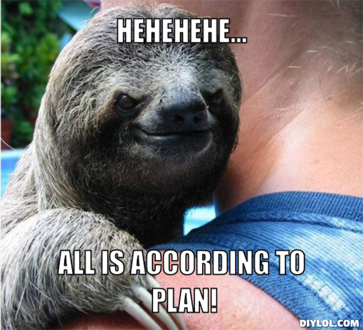
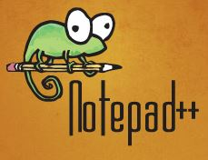

Plan for timen er som følger:
- Alle skal ha en hoved-nettside der man også linker til en annen nettside man selv har laget (se eks. hos Lars)
- Alle skal greie å bruke CSS til å style nettsiden sin. Lars skal vise eksempel til å begynne med.
En innføring i CSS finner du hos Kidsakoder
- De som har lyst til å prøve å publisere siden sin i dag kan bruke Bitballoon, som er gratis.
Du får ikke nødvendigvis den nettadressen du ønsker deg, men det funker bra.
- Lars fikser kanskje et .no-domene til oss før jul. Det er lov å komme med forslag, feks www.truemario.no
Dette betyr IKKE at ditt forslag nødvendigvis blir tatt hensyn til.